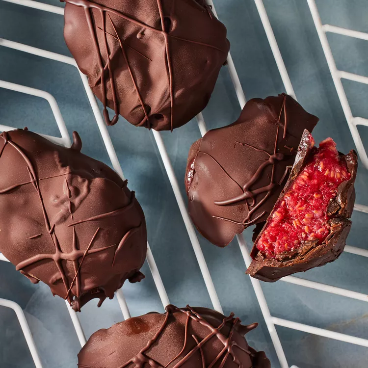

Raspberry-Jam Bites
It doesn't get easier, or more delicious, than this simple, three-ingredient snack. Chia seeds and raspberries add fiber to these healthy frozen bites. Chocolate provides a touch of sweetness to balance the tartness of the berries..
Preparation time
- Total: Approximately 120 minutes
- Preparation: 30 minutes
Ingredients
- 16 ounces fresh raspberries (about 4 cups) or 3 1/2 cups frozen raspberries
- 2 tablespoons chia seeds
- 12 ounces dark chocolate (60-70%), chopped
Instructions
- step1: Line a large baking sheet with parchment paper. Place raspberries and chia seeds in a large bowl. Mash with a fork until the mixture is jammy. (If using frozen raspberries, add 1/4 cup water, 1 tablespoon at a time, until the berries are loosened.) Scoop the mixture by heaping tablespoonfuls onto the prepared baking sheet. Freeze for at least 1 hour or up to 8 hours.
- step2: Line another baking sheet with parchment paper. Microwave chocolate in a medium microwave-safe bowl on Medium for 1 minute. Stir, then continue microwaving on Medium in 20-second intervals until melted, stopping to stir after each interval. (Alternatively, place chocolate in the top of a double boiler over hot, but not boiling, water; stir until melted.)
- step3: Remove the raspberry bites from the freezer. Using a fork, hold one bite over the melted chocolate and use a spoon to lightly coat it, allowing excess chocolate to drip back into the bowl. Spoon about 1 teaspoon melted chocolate onto the parchment paper and place the coated bite on top. Repeat the process with the remaining bites. Use a spoon or fork to drizzle the tops of the bites with the remaining chocolate, if desired. Serve immediately or store in an airtight container in the freezer for up to 1 month.
Nutrition
The table below shows nutritional values per serving without the additional fillings.
| Calories | 251kcal |
|---|---|
| Carbs | 35g |
| Protein | 3g |
| Fat | 14g |